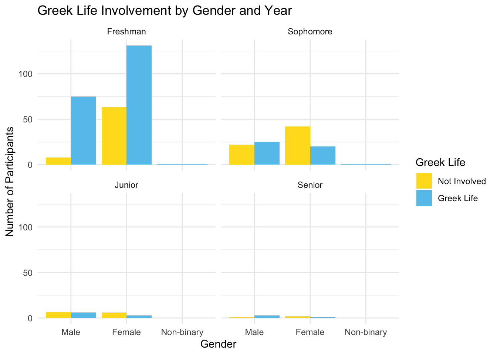

Thesis data descriptives and demographic information
Allison Li
03222025
Goal
For this portfolio, I will continue to use the dataset from my thesis study. This portfolio will focus on analyzing the descriptive information for each scale and visual representation of the demographic information for the participants.
Step 1: calculating scales’ basic descriptives (mean, sd, max, and mix) and cronbach alpha
##Bullshit Frequency scale general
bfs <- c("BFS_1", "BFS_2", "BFS_3", "BFS_4", "BFS_5", "BFS_6", "BFS_7", "BFS_8", "BFS_9", "BFS_10", "BFS_11", "BFS_12")
Thesis_scale <- Thesis_scale %>%
mutate(BFS_score = rowMeans(Thesis_scale[,bfs],na.rm=TRUE))
bfs_items <- Thesis_scale[, bfs]
cronbach.alpha(bfs_items, standardized = TRUE, CI = TRUE, na.rm = TRUE)##
## Standardized Cronbach's alpha for the 'bfs_items' data-set
##
## Items: 12
## Sample units: 417
## alpha: 0.855
##
## Bootstrap 95% CI based on 1000 samples
## 2.5% 97.5%
## 0.827 0.875##Bullshit Frequency scale evasive
bfse <- c("BFS_9", "BFS_10", "BFS_11", "BFS_12")
Thesis_scale <- Thesis_scale %>%
mutate(BFSe_score = rowMeans(Thesis_scale[,bfse],na.rm=TRUE))
bfse_items <- Thesis_scale[, bfse]
cronbach.alpha(bfse_items, standardized = TRUE, CI = TRUE, na.rm = TRUE)##
## Standardized Cronbach's alpha for the 'bfse_items' data-set
##
## Items: 4
## Sample units: 417
## alpha: 0.721
##
## Bootstrap 95% CI based on 1000 samples
## 2.5% 97.5%
## 0.663 0.769##Bullshit Frequency scale persuasive
bfsp <- c("BFS_1", "BFS_2", "BFS_3", "BFS_4", "BFS_5", "BFS_6", "BFS_7", "BFS_8")
Thesis_scale <- Thesis_scale %>%
mutate(BFSp_score = rowMeans(Thesis_scale[,bfsp],na.rm=TRUE))
bfsp_items <- Thesis_scale[, bfsp]
cronbach.alpha(bfsp_items, standardized = TRUE, CI = TRUE, na.rm = TRUE)##
## Standardized Cronbach's alpha for the 'bfsp_items' data-set
##
## Items: 8
## Sample units: 417
## alpha: 0.86
##
## Bootstrap 95% CI based on 1000 samples
## 2.5% 97.5%
## 0.833 0.881##Bullshit Propensity scale
bps <- c("BPS_1", "BPS_2", "BPS_3", "BPS_4", "BPS_5", "BPS_6", "BPS_7", "BPS_8", "BPS_9", "BPS_10", "BPS_11", "BPS_12")
Thesis_scale <- Thesis_scale %>%
mutate(BPS_score = rowMeans(Thesis_scale[,bps],na.rm=TRUE))
bps_items <- Thesis_scale[, bps]
cronbach.alpha(bps_items, standardized = TRUE, CI = TRUE, na.rm = TRUE)##
## Standardized Cronbach's alpha for the 'bps_items' data-set
##
## Items: 12
## Sample units: 417
## alpha: 0.756
##
## Bootstrap 95% CI based on 1000 samples
## 2.5% 97.5%
## 0.712 0.793##Lying in Everyday Situations Scale
lie <- c("lies1", "lies2", "lies3", "lies4", "lies5", "lies6", "lies7", "lies8", "lies9", "lies10", "lies11", "lies12", "lies13", "lies14")
Thesis_scale <- Thesis_scale %>%
mutate(LIE_score = rowMeans(Thesis_scale[,lie],na.rm=TRUE))
lie_items <- Thesis_scale[, lie]
cronbach.alpha(lie_items, standardized = TRUE, CI = TRUE, na.rm = TRUE)##
## Standardized Cronbach's alpha for the 'lie_items' data-set
##
## Items: 14
## Sample units: 417
## alpha: 0.911
##
## Bootstrap 95% CI based on 1000 samples
## 2.5% 97.5%
## 0.897 0.924##Short_dark_triad Narcissism
sdtnarc <- c("DTS_Nar_1", "DTS_Nar_2", "DTS_Nar_3", "DTS_Nar_4", "DTS_Nar_5", "DTS_Nar_6", "DTS_Nar_7", "DTS_Nar_8", "DTS_Nar_9")
Thesis_scale <- Thesis_scale %>%
mutate(sdtnarc_score = rowMeans(Thesis_scale[,sdtnarc],na.rm=TRUE))
sdtnarc_items <- Thesis_scale[, sdtnarc]
cronbach.alpha(sdtnarc_items, standardized = TRUE, CI = TRUE, na.rm = TRUE)##
## Standardized Cronbach's alpha for the 'sdtnarc_items' data-set
##
## Items: 9
## Sample units: 417
## alpha: 0.709
##
## Bootstrap 95% CI based on 1000 samples
## 2.5% 97.5%
## 0.656 0.753##Short_dark_triad Machiavellianism
sdtmach <- c("DTS_MACH_1", "DTS_MACH_2", "DTS_MACH_3", "DTS_MACH_4", "DTS_MACH_5", "DTS_MACH_6", "DTS_MACH_7", "DTS_MACH_8", "DTS_MACH_9")
Thesis_scale <- Thesis_scale %>%
mutate(sdtmach_score = rowMeans(Thesis_scale[,sdtmach],na.rm=TRUE))
sdtmach_items <- Thesis_scale[, sdtmach]
cronbach.alpha(sdtmach_items, standardized = TRUE, CI = TRUE, na.rm = TRUE)##
## Standardized Cronbach's alpha for the 'sdtmach_items' data-set
##
## Items: 9
## Sample units: 417
## alpha: 0.791
##
## Bootstrap 95% CI based on 1000 samples
## 2.5% 97.5%
## 0.756 0.821##Short_dark_triad Psychopathy
sdtpsych <- c("DTS_Path_1", "DTS_Path_2", "DTS_Path_3", "DTS_Path_4", "DTS_Path_5", "DTS_Path_6", "DTS_Path_7", "DTS_Path_8", "DTS_Path_9")
Thesis_scale <- Thesis_scale %>%
mutate(sdtpsych_score = rowMeans(Thesis_scale[,sdtpsych],na.rm=TRUE))
sdtpsych_items <- Thesis_scale[, sdtpsych]
cronbach.alpha(sdtpsych_items, standardized = TRUE, CI = TRUE, na.rm = TRUE)##
## Standardized Cronbach's alpha for the 'sdtpsych_items' data-set
##
## Items: 9
## Sample units: 417
## alpha: 0.759
##
## Bootstrap 95% CI based on 1000 samples
## 2.5% 97.5%
## 0.719 0.791##Hypersensitive Narcissism Scale
narchyper <- c("HNS_1", "HNS_2", "HNS_3", "HNS_4", "HNS_5", "HNS_6", "HNS_7", "HNS_8", "HNS_9", "NPI_10")
Thesis_scale <- Thesis_scale %>%
mutate(narchyper_score = rowMeans(Thesis_scale[,narchyper],na.rm=TRUE))
narchyper_items <- Thesis_scale[, narchyper]
cronbach.alpha(narchyper_items, standardized = TRUE, CI = TRUE, na.rm = TRUE)##
## Standardized Cronbach's alpha for the 'narchyper_items' data-set
##
## Items: 10
## Sample units: 417
## alpha: 0.705
##
## Bootstrap 95% CI based on 1000 samples
## 2.5% 97.5%
## 0.658 0.747##Narcissistic Personality Inventory
narcgrand <- c("NPI_1", "NPI_2", "NPI_3", "NPI_4", "NPI_5", "NPI_6", "NPI_7", "NPI_8", "NPI_9", "NPI_10", "NPI_11", "NPI_12", "NPI_13", "NPI_14", "NPI_15", "NPI_16")
Thesis_scale <- Thesis_scale %>%
mutate(narcgrand_score = rowMeans(Thesis_scale[,narcgrand],na.rm=TRUE))
narcgrand_items <- Thesis_scale[, narcgrand]
cronbach.alpha(narcgrand_items, standardized = TRUE, CI = TRUE, na.rm = TRUE)##
## Standardized Cronbach's alpha for the 'narcgrand_items' data-set
##
## Items: 16
## Sample units: 417
## alpha: 0.749
##
## Bootstrap 95% CI based on 1000 samples
## 2.5% 97.5%
## 0.706 0.783##Machiavellianism Personality scale
mach <- c("MPS_1", "MPS_2", "MPS_3", "MPS_4", "MPS_5", "MPS_6", "MPS_7", "MPS_8", "MPS_9", "MPS_10", "MPS_11", "MPS_12", "MPS_13", "MPS_14", "MPS_15", "MPS_16")
Thesis_scale <- Thesis_scale %>%
mutate(mach_score = rowMeans(Thesis_scale[,mach],na.rm=TRUE))
mach_items <- Thesis_scale[, mach]
cronbach.alpha(mach_items, standardized = TRUE, CI = TRUE, na.rm = TRUE)##
## Standardized Cronbach's alpha for the 'mach_items' data-set
##
## Items: 16
## Sample units: 417
## alpha: 0.837
##
## Bootstrap 95% CI based on 1000 samples
## 2.5% 97.5%
## 0.810 0.857##Levenson Self-Report Psychopathy Scale
psycho <- c("LSRP_PPS_1", "LSRP_PPS_2", "LSRP_PPS_3", "LSRP_PPS_4", "LSRP_PPS_5", "LSRP_PPS_6", "LSRP_PPS_7", "LSRP_PPS_8", "LSRP_PPS_9", "LSRP_PPS_10", "LSRP_PPS_11", "LSRP_PPS_12", "LSRP_PPS_13", "LSRP_PPS_14", "LSRP_PPS_15", "LSRP_PPS_16", "LSRP_SPS_1", "LSRP_SPS_2", "LSRP_SPS_3", "LSRP_SPS_4", "LSRP_SPS_5", "LSRP_SPS_6", "LSRP_SPS_7", "LSRP_SPS_8", "LSRP_SPS_9", "LSRP_SPS_10")
Thesis_scale <- Thesis_scale %>%
mutate(psycho_score = rowMeans(Thesis_scale[,psycho],na.rm=TRUE))
psycho_items <- Thesis_scale[, psycho]
cronbach.alpha(psycho_items, standardized = TRUE, CI = TRUE, na.rm = TRUE)##
## Standardized Cronbach's alpha for the 'psycho_items' data-set
##
## Items: 26
## Sample units: 417
## alpha: 0.861
##
## Bootstrap 95% CI based on 1000 samples
## 2.5% 97.5%
## 0.842 0.876##primary factor of psychopathy scale
psychopri <- c("LSRP_PPS_1", "LSRP_PPS_2", "LSRP_PPS_3", "LSRP_PPS_4", "LSRP_PPS_5",
"LSRP_PPS_6", "LSRP_PPS_7", "LSRP_PPS_8", "LSRP_PPS_9", "LSRP_PPS_10",
"LSRP_PPS_11", "LSRP_PPS_12", "LSRP_PPS_13", "LSRP_PPS_14", "LSRP_PPS_15",
"LSRP_PPS_16")
Thesis_scale <- Thesis_scale %>%
mutate(psychopri_score = rowMeans(Thesis_scale[,psychopri],na.rm=TRUE))
psychopri_items <- Thesis_scale[, psychopri]
cronbach.alpha(psychopri_items, standardized = TRUE, CI = TRUE, na.rm = TRUE)##
## Standardized Cronbach's alpha for the 'psychopri_items' data-set
##
## Items: 16
## Sample units: 417
## alpha: 0.812
##
## Bootstrap 95% CI based on 1000 samples
## 2.5% 97.5%
## 0.786 0.834##secondary factor of psychopathy scale
psychosec <- c("LSRP_SPS_1", "LSRP_SPS_2", "LSRP_SPS_3", "LSRP_SPS_4", "LSRP_SPS_5",
"LSRP_SPS_6", "LSRP_SPS_7", "LSRP_SPS_8", "LSRP_SPS_9", "LSRP_SPS_10")
Thesis_scale <- Thesis_scale %>%
mutate(psychosec_score = rowMeans(Thesis_scale[,psychosec],na.rm=TRUE))
psychosec_items <- Thesis_scale[, psychosec]
cronbach.alpha(psychosec_items, standardized = TRUE, CI = TRUE, na.rm = TRUE)##
## Standardized Cronbach's alpha for the 'psychosec_items' data-set
##
## Items: 10
## Sample units: 417
## alpha: 0.763
##
## Bootstrap 95% CI based on 1000 samples
## 2.5% 97.5%
## 0.727 0.794##Self-esteem (Rosenberg)
se <- c("self_esteem_1", "self_esteem_2", "self_esteem_3", "self_esteem_4", "self_esteem_5",
"self_esteem_6", "self_esteem_7", "self_esteem_8", "self_esteem_9", "self_esteem_10")
Thesis_scale <- Thesis_scale %>%
mutate(se_score = rowMeans(Thesis_scale[,se],na.rm=TRUE))
se_items <- Thesis_scale[, se]
cronbach.alpha(se_items, standardized = TRUE, CI = TRUE, na.rm = TRUE)##
## Standardized Cronbach's alpha for the 'se_items' data-set
##
## Items: 10
## Sample units: 417
## alpha: 0.901
##
## Bootstrap 95% CI based on 1000 samples
## 2.5% 97.5%
## 0.883 0.915##HEXACO
##Honesty_humility
hon <- c("hex6", "hex12", "hex18", "hex24", "hex30", "hex36", "hex42", "hex48", "hex54", "hex60")
Thesis_scale <- Thesis_scale %>%
mutate(hon_score = rowMeans(Thesis_scale[,hon],na.rm=TRUE))
hon_items <- Thesis_scale[, hon]
cronbach.alpha(hon_items, standardized = TRUE, CI = TRUE, na.rm = TRUE)##
## Standardized Cronbach's alpha for the 'hon_items' data-set
##
## Items: 10
## Sample units: 417
## alpha: 0.523
##
## Bootstrap 95% CI based on 1000 samples
## 2.5% 97.5%
## 0.441 0.586##Emotionality
emo <- c("hex5", "hex11", "hex17", "hex23", "hex29", "hex35", "hex41", "hex47", "hex53", "hex59")
Thesis_scale <- Thesis_scale %>%
mutate(emo_score = rowMeans(Thesis_scale[,emo],na.rm=TRUE))
emo_items <- Thesis_scale[, emo]
cronbach.alpha(emo_items, standardized = TRUE, CI = TRUE, na.rm = TRUE)##
## Standardized Cronbach's alpha for the 'emo_items' data-set
##
## Items: 10
## Sample units: 417
## alpha: 0.801
##
## Bootstrap 95% CI based on 1000 samples
## 2.5% 97.5%
## 0.768 0.830##Extraversion
extra <- c("hex4", "hex10", "hex16", "hex22", "hex28", "hex34", "hex40", "hex46", "hex52", "hex58")
Thesis_scale <- Thesis_scale %>%
mutate(extra_score = rowMeans(Thesis_scale[,extra],na.rm=TRUE))
extra_items <- Thesis_scale[, extra]
cronbach.alpha(extra_items, standardized = TRUE, CI = TRUE, na.rm = TRUE)##
## Standardized Cronbach's alpha for the 'extra_items' data-set
##
## Items: 10
## Sample units: 417
## alpha: 0.802
##
## Bootstrap 95% CI based on 1000 samples
## 2.5% 97.5%
## 0.768 0.828##Agreeableness
agree <- c("hex3", "hex9", "hex15", "hex21", "hex27", "hex33", "hex39", "hex45", "hex51", "hex57")
Thesis_scale <- Thesis_scale %>%
mutate(agree_score = rowMeans(Thesis_scale[,agree],na.rm=TRUE))
agree_items <- Thesis_scale[, agree]
cronbach.alpha(agree_items, standardized = TRUE, CI = TRUE, na.rm = TRUE)##
## Standardized Cronbach's alpha for the 'agree_items' data-set
##
## Items: 10
## Sample units: 417
## alpha: 0.784
##
## Bootstrap 95% CI based on 1000 samples
## 2.5% 97.5%
## 0.745 0.815##CONSCIENTIOUSNESS
cons <- c("hex2", "hex8", "hex14", "hex20", "hex26", "hex32", "hex38", "hex44", "hex50", "hex56")
Thesis_scale <- Thesis_scale %>%
mutate(cons_score = rowMeans(Thesis_scale[,cons],na.rm=TRUE))
cons_items <- Thesis_scale[, cons]
cronbach.alpha(cons_items, standardized = TRUE, CI = TRUE, na.rm = TRUE)##
## Standardized Cronbach's alpha for the 'cons_items' data-set
##
## Items: 10
## Sample units: 417
## alpha: 0.802
##
## Bootstrap 95% CI based on 1000 samples
## 2.5% 97.5%
## 0.771 0.826##Openness to Experience
open <- c("hex1", "hex7", "hex13", "hex19", "hex25", "hex31", "hex37", "hex43", "hex49", "hex55")
Thesis_scale <- Thesis_scale %>%
mutate(open_score = rowMeans(Thesis_scale[,open],na.rm=TRUE))
open_items <- Thesis_scale[, open]
cronbach.alpha(open_items, standardized = TRUE, CI = TRUE, na.rm = TRUE)##
## Standardized Cronbach's alpha for the 'open_items' data-set
##
## Items: 10
## Sample units: 417
## alpha: 0.676
##
## Bootstrap 95% CI based on 1000 samples
## 2.5% 97.5%
## 0.615 0.723##Intellectual Humility Scale
ihs <- c("IHS_1", "IHS_2", "IHS_3", "IHS_4", "IHS_5", "IHS_6")
Thesis_scale <- Thesis_scale %>%
mutate(ihs_score = rowMeans(Thesis_scale[,ihs],na.rm=TRUE))
ihs_items <- Thesis_scale[, ihs]
cronbach.alpha(ihs_items, standardized = TRUE, CI = TRUE, na.rm = TRUE)##
## Standardized Cronbach's alpha for the 'ihs_items' data-set
##
## Items: 6
## Sample units: 417
## alpha: 0.45
##
## Bootstrap 95% CI based on 1000 samples
## 2.5% 97.5%
## 0.349 0.540##Need for Closure
nclos <- c("nclos1", "nclos2", "nclos3", "nclos4", "nclos5", "nclos6", "nclos7", "nclos8", "nclos9", "nclos10",
"nclos11", "nclos12", "nclos13", "nclos14", "nclos15",
"nclos16", "nclos17", "nclos18", "nclos19", "nclos20",
"nclos21", "nclos22", "nclos23", "nclos24", "nclos25",
"nclos26", "nclos27", "nclos28", "nclos29", "nclos30",
"nclos31", "nclos32", "nclos33", "nclos34", "nclos35",
"nclos36", "nclos37", "nclos38", "nclos39", "nclos40",
"nclos41", "nclos42")
Thesis_scale <- Thesis_scale %>%
mutate(nclos_score = rowMeans(Thesis_scale[,nclos],na.rm=TRUE))
nclos_items <- Thesis_scale[, nclos]
cronbach.alpha(nclos_items, standardized = TRUE, CI = TRUE, na.rm = TRUE)##
## Standardized Cronbach's alpha for the 'nclos_items' data-set
##
## Items: 42
## Sample units: 417
## alpha: 0.838
##
## Bootstrap 95% CI based on 1000 samples
## 2.5% 97.5%
## 0.810 0.858##Need for Cognition
ncog <- c("ncog7", "ncog8", "ncog9", "ncog10", "ncog11", "ncog12",
"ncog13", "ncog14", "ncog15", "ncog16", "ncog17", "ncog18")
Thesis_scale <- Thesis_scale %>%
mutate(ncog_score = rowMeans(Thesis_scale[,ncog],na.rm=TRUE))
ncog_items <- Thesis_scale[, ncog]
cronbach.alpha(ncog_items, standardized = TRUE, CI = TRUE, na.rm = TRUE)##
## Standardized Cronbach's alpha for the 'ncog_items' data-set
##
## Items: 12
## Sample units: 417
## alpha: 0.721
##
## Bootstrap 95% CI based on 1000 samples
## 2.5% 97.5%
## 0.664 0.766##Actively Open Thinking Style
openTS <- c("A4CTS_1", "A4CTS_2", "A4CTS_3", "A4CTS_4", "A4CTS_5", "A4CTS_6")
Thesis_scale <- Thesis_scale %>%
mutate(openTS_score = rowMeans(Thesis_scale[,openTS],na.rm=TRUE))
openTS_items <- Thesis_scale[, openTS]
cronbach.alpha(openTS_items, standardized = TRUE, CI = TRUE, na.rm = TRUE)##
## Standardized Cronbach's alpha for the 'openTS_items' data-set
##
## Items: 6
## Sample units: 417
## alpha: 0.839
##
## Bootstrap 95% CI based on 1000 samples
## 2.5% 97.5%
## 0.804 0.865##Close-minded Thinking Style
closeTS <- c("A4CTS_7", "A4CTS_8", "A4CTS_9", "A4CTS_10", "A4CTS_11", "A4CTS_12")
Thesis_scale <- Thesis_scale %>%
mutate(closeTS_score = rowMeans(Thesis_scale[,closeTS],na.rm=TRUE))
closeTS_items <- Thesis_scale[, closeTS]
cronbach.alpha(closeTS_items, standardized = TRUE, CI = TRUE, na.rm = TRUE)##
## Standardized Cronbach's alpha for the 'closeTS_items' data-set
##
## Items: 6
## Sample units: 417
## alpha: 0.826
##
## Bootstrap 95% CI based on 1000 samples
## 2.5% 97.5%
## 0.789 0.855##prefer intuitive Thinking Style
intuitiveTS <- c("A4CTS_13", "A4CTS_14", "A4CTS_15", "A4CTS_16", "A4CTS_17", "A4CTS_18")
Thesis_scale <- Thesis_scale %>%
mutate(intuitiveTS_score = rowMeans(Thesis_scale[,intuitiveTS],na.rm=TRUE))
intuitiveTS_items <- Thesis_scale[, intuitiveTS]
cronbach.alpha(intuitiveTS_items, standardized = TRUE, CI = TRUE, na.rm = TRUE)##
## Standardized Cronbach's alpha for the 'intuitiveTS_items' data-set
##
## Items: 6
## Sample units: 417
## alpha: 0.873
##
## Bootstrap 95% CI based on 1000 samples
## 2.5% 97.5%
## 0.849 0.893##prefer effortful Thinking Style
effortTS <- c("A4CTS_19", "A4CTS_20", "A4CTS_21", "A4CTS_22", "A4CTS_23", "A4CTS_24")
Thesis_scale <- Thesis_scale %>%
mutate(effortTS_score = rowMeans(Thesis_scale[,effortTS],na.rm=TRUE))
effortTS_items <- Thesis_scale[, effortTS]
cronbach.alpha(effortTS_items, standardized = TRUE, CI = TRUE, na.rm = TRUE)##
## Standardized Cronbach's alpha for the 'effortTS_items' data-set
##
## Items: 6
## Sample units: 417
## alpha: 0.83
##
## Bootstrap 95% CI based on 1000 samples
## 2.5% 97.5%
## 0.798 0.858##Actively Open-Minded Thinking about Evidence Scale
activeopen <- c("aopen1", "aopen2", "aopen3", "aopen4", "aopen5", "aopen6", "aopen7", "aopen8")
Thesis_scale <- Thesis_scale %>%
mutate(activeopen_score = rowMeans(Thesis_scale[,activeopen],na.rm=TRUE))
activeopen_items <- Thesis_scale[, activeopen]
cronbach.alpha(activeopen_items, standardized = TRUE, CI = TRUE, na.rm = TRUE)##
## Standardized Cronbach's alpha for the 'activeopen_items' data-set
##
## Items: 8
## Sample units: 417
## alpha: 0.747
##
## Bootstrap 95% CI based on 1000 samples
## 2.5% 97.5%
## 0.707 0.780##Faith in Intuition Scale
fi <- c("fi1", "fi2", "fi3", "fi4", "fi5", "fi6", "fi7", "fi8", "fi9", "fi10", "fi11", "fi12")
Thesis_scale <- Thesis_scale %>%
mutate(fi_score = rowMeans(Thesis_scale[,fi],na.rm=TRUE))
fi_items <- Thesis_scale[, fi]
cronbach.alpha(fi_items, standardized = TRUE, CI = TRUE, na.rm = TRUE)##
## Standardized Cronbach's alpha for the 'fi_items' data-set
##
## Items: 12
## Sample units: 417
## alpha: 0.86
##
## Bootstrap 95% CI based on 1000 samples
## 2.5% 97.5%
## 0.840 0.881## The descriptives information for each scales
psych::describe(Thesis_scale %>% select(BFS_score, BFSe_score, BFSp_score, BPS_score, LIE_score, sdtnarc_score, sdtmach_score, sdtpsych_score, narchyper_score, narcgrand_score, mach_score, psycho_score, psychopri_score, psychosec_score, se_score, hon_score, emo_score, extra_score, agree_score, cons_score, open_score, ihs_score, nclos_score, ncog_score, openTS_score, closeTS_score, intuitiveTS_score, effortTS_score, activeopen_score, fi_score, crt_score, word_score, ns_score))## vars n mean sd median trimmed mad min max range skew
## BFS_score 1 417 3.11 0.58 3.08 3.13 0.49 1.08 4.83 3.75 -0.21
## BFSe_score 2 417 3.18 0.69 3.25 3.20 0.74 1.00 5.00 4.00 -0.29
## BFSp_score 3 417 3.08 0.66 3.12 3.09 0.56 1.12 5.00 3.88 -0.13
## BPS_score 4 417 2.65 0.49 2.67 2.66 0.49 1.00 4.17 3.17 -0.22
## LIE_score 5 417 2.91 1.08 3.00 2.88 1.06 1.00 7.00 6.00 0.24
## sdtnarc_score 6 416 3.01 0.54 3.00 3.00 0.49 1.44 4.89 3.44 0.11
## sdtmach_score 7 417 3.06 0.61 3.00 3.06 0.66 1.44 5.00 3.56 -0.04
## sdtpsych_score 8 417 2.27 0.57 2.22 2.26 0.49 1.00 4.33 3.33 0.34
## narchyper_score 9 417 3.07 0.56 3.10 3.09 0.44 1.00 4.60 3.60 -0.33
## narcgrand_score 10 417 1.31 0.21 1.31 1.30 0.19 1.00 1.94 0.94 0.59
## mach_score 11 417 2.85 0.58 2.81 2.83 0.56 1.56 4.81 3.25 0.27
## psycho_score 12 417 2.07 0.38 2.04 2.06 0.40 1.31 3.42 2.12 0.28
## psychopri_score 13 417 2.06 0.41 2.06 2.05 0.46 1.19 3.44 2.25 0.24
## psychosec_score 14 416 2.08 0.45 2.10 2.08 0.44 1.00 3.50 2.50 0.11
## se_score 15 417 2.95 0.51 2.90 2.94 0.44 1.40 4.00 2.60 0.11
## hon_score 16 416 3.20 0.49 3.20 3.21 0.44 1.60 4.50 2.90 -0.06
## emo_score 17 416 3.45 0.66 3.40 3.45 0.59 1.30 5.00 3.70 -0.06
## extra_score 18 416 3.38 0.62 3.40 3.39 0.59 1.70 4.80 3.10 -0.11
## agree_score 19 416 3.10 0.60 3.10 3.11 0.59 1.50 4.80 3.30 -0.09
## cons_score 20 416 3.53 0.61 3.50 3.52 0.59 1.80 5.00 3.20 0.14
## open_score 21 416 3.06 0.57 3.00 3.05 0.44 1.20 4.90 3.70 0.24
## ihs_score 22 416 3.59 0.46 3.67 3.58 0.49 2.17 5.00 2.83 0.28
## nclos_score 23 417 3.87 0.41 3.83 3.85 0.39 2.57 5.17 2.60 0.26
## ncog_score 24 416 3.09 0.49 3.08 3.07 0.37 1.50 4.83 3.33 0.26
## openTS_score 25 416 3.46 0.82 3.50 3.45 0.74 1.00 6.00 5.00 0.10
## closeTS_score 26 417 3.02 0.90 3.00 2.99 0.74 1.00 6.00 5.00 0.35
## intuitiveTS_score 27 416 4.00 0.77 4.00 4.00 0.74 1.83 6.00 4.17 -0.09
## effortTS_score 28 417 3.94 0.87 4.00 3.96 0.99 1.00 6.00 5.00 -0.20
## activeopen_score 29 416 3.98 0.68 3.88 3.94 0.74 2.50 5.75 3.25 0.47
## fi_score 30 417 3.76 0.60 3.75 3.75 0.62 1.75 5.00 3.25 0.04
## crt_score 31 391 0.34 0.36 0.33 0.30 0.49 0.00 1.00 1.00 0.59
## word_score 32 416 0.58 0.20 0.60 0.60 0.15 0.00 1.00 1.00 -0.77
## ns_score 33 411 0.85 0.19 0.90 0.89 0.15 0.00 1.00 1.00 -1.80
## kurtosis se
## BFS_score 0.38 0.03
## BFSe_score 0.27 0.03
## BFSp_score 0.22 0.03
## BPS_score 0.18 0.02
## LIE_score -0.19 0.05
## sdtnarc_score 0.27 0.03
## sdtmach_score -0.08 0.03
## sdtpsych_score 0.10 0.03
## narchyper_score 0.19 0.03
## narcgrand_score -0.12 0.01
## mach_score -0.16 0.03
## psycho_score -0.31 0.02
## psychopri_score -0.45 0.02
## psychosec_score -0.19 0.02
## se_score -0.31 0.03
## hon_score -0.04 0.02
## emo_score -0.17 0.03
## extra_score -0.28 0.03
## agree_score -0.21 0.03
## cons_score -0.58 0.03
## open_score 0.51 0.03
## ihs_score 0.56 0.02
## nclos_score 0.45 0.02
## ncog_score 0.68 0.02
## openTS_score 0.42 0.04
## closeTS_score 0.13 0.04
## intuitiveTS_score 0.13 0.04
## effortTS_score -0.04 0.04
## activeopen_score -0.45 0.03
## fi_score -0.20 0.03
## crt_score -1.01 0.02
## word_score 0.31 0.01
## ns_score 3.51 0.01Step 2: Demographic information
For this part, I would like to know the demographic information so I might be able to use for exploratory analysis. I selected the variables I am interested in, including: gender, year in college, major, and if the participant is currently a member of a fraternity or sorority.
###Gender
##For gender, I would like to do a pie chart. So I will start with coverting gender codes to labels
Thesis_scale$gender_label <- factor(Thesis_scale$gender,
levels = c(1, 2, 3),
labels = c("Male", "Female", "Non-binary"))
##Then I create a summary table for further plotting
genders <- Thesis_scale %>%
count(gender_label) %>%
mutate(perc = round(n / sum(n) * 100, 1),
label = paste0(perc, "%"))
##Now I can create the pie chart
ggplot(genders, aes(x = "", y = n, fill = gender_label)) +
geom_bar(width = 1, stat = "identity") +
coord_polar("y") +
labs(title = "Participant Gender Distribution") +
scale_fill_manual(values = c("Male" = "#90D6FF",
"Female" = "#ff69b4",
"Non-binary" = "#6c08db")
)+
geom_text(aes(label = label),
position = position_stack(vjust = 0.5),
color = "white", size = 5)+
theme_void()###Year in college
##For year in college, I would like to do a pie chart. So I will start with coverting gender codes to labels
Thesis_scale$year_label <- factor(Thesis_scale$year,
levels = c(1, 2, 3, 4),
labels = c("Freshman", "Sophomore", "Junior", "Senior"))
years <- Thesis_scale %>%
count(year_label)
##Now I can create a bar chart
ggplot(years, aes(x = year_label, y = n, fill = year_label)) +
geom_col() +
geom_text(aes(label = n), vjust = -0.5, size = 3) +
labs(title = "Participants by Year in College",
x = "Year in College",
y = "Number of Participants") +
scale_fill_manual(values = c("#7a4d9f", "#eb68a0", "#feb326", "#64c5eb")) +
theme_minimal() +
theme(legend.position = "none")
###Greek Life
##Although this is not the focus of my thesis study, I asked the participants if they are currently a member of a fraternity or sorority. I added this question just want to explore if certain personality traits might be related with one's greek life involvement.
##In terms of visualization, I want to present gender and involvement in greek life.
Thesis_scale <- Thesis_scale %>%
mutate(
greek = factor(Greek1, levels = c(1, 2),
labels = c("Not Involved", "Greek Life"))
)
##count combinations
gender_greek <- Thesis_scale %>%
count(gender_label, greek)
##create the bar chart
ggplot(gender_greek, aes(x = gender_label, y = n, fill = greek)) +
geom_col(position = "dodge") +
labs(title = "Greek Life Involvement by Gender",
x = "Gender",
y = "Number of Participants",
fill = "Greek Life") +
scale_fill_manual(values = c("Not Involved" = "#FFDE21", "Greek Life" = "#64c5eb")) +
theme_minimal() +
coord_flip()Looking at the graph, I can tell that most of the students in the study are involved in greek life. In addition, the number of male students involved in a fraternity is more than twice the number of male students who are not involved in Greek life. For the two non-binary students, both of them are involed in greek life.
## Now I would like to add year in college as another vairable for visualization. I want to know whether male students are more involved in greek life despite of year in college
##I start with combining
gender_year_greek <- Thesis_scale %>%
count(year_label, gender_label, greek)
##And then I grouped bars by gender and greek life involvement, faceted by year in college
ggplot(gender_year_greek, aes(x = gender_label, y = n, fill = greek)) +
geom_col(position = "dodge") +
facet_wrap(~ year_label) +
labs(title = "Greek Life Involvement by Gender and Year",
x = "Gender",
y = "Number of Participants",
fill = "Greek Life") +
scale_fill_manual(values = c("Not Involved" = "#FFDE21", "Greek Life" = "#64c5eb")) +
theme_minimal()
We can see that for both female and male freshman students at Wake, most of them are members of a sorority or a fraternity. However, for sophomore, junior, and senior, the difference between the number of students that are involved or not involved in greek life is smaller. Sophomore male students are slightly more likely to be involved in greek life, while there is still a significantly larger proportion of female students involving in greek life.
saveRDS(Thesis_scale, file = "Thesis_scale.rds")
write_sav(Thesis_scale, "Thesis_scale.sav")